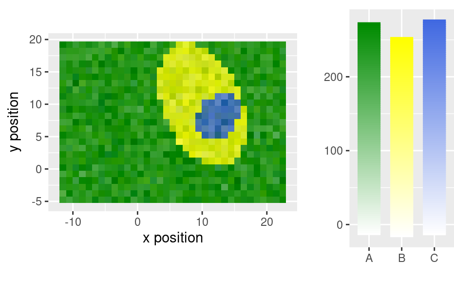

R/DEPRECATED-ggplot2.R
DEPRECATED-ggplot2.RdThese ggplot2-related hyperSpec functions are deprecated
and they will be removed in the next release of the package.
Now functions from package hySpc.ggplot2
(link)
should be used as alternatives to plot hyperSpec objects with ggplot2.
qplotspc(
x,
wl.range = TRUE,
...,
mapping = aes_string(x = ".wavelength", y = "spc", group = ".rownames"),
spc.nmax = hy_get_option("ggplot.spc.nmax"),
map.lineonly = FALSE,
debuglevel = hy_get_option("debuglevel")
)
qplotmap(
object,
mapping = aes_string(x = "x", y = "y", fill = "spc"),
...,
func = mean,
func.args = list(),
map.tileonly = FALSE
)
qplotc(
object,
mapping = aes_string(x = "c", y = "spc"),
...,
func = NULL,
func.args = list(),
map.pointonly = FALSE
)
qplotmixmap(object, ...)
legendright(p, l, legend.width = 8, legend.unit = "lines")
qmixtile(
object,
purecol = stop("pure component colors needed."),
mapping = aes_string(x = "x", y = "y", fill = "spc"),
...,
map.tileonly = FALSE
)
normalize.colrange(x, na.rm = TRUE, legend = FALSE, n = 100, ...)
normalize.range(x, na.rm = TRUE, legend = FALSE, n = 100, ...)
normalize.null(x, na.rm = TRUE, legend = FALSE, n = 100, ...)
normalize.minmax(x, min = 0, max = 1, legend = FALSE, n = 100, ...)
qmixlegend(
x,
purecol,
dx = 0.33,
ny = 100,
labels = names(purecol),
normalize = normalize.colrange,
...
)
colmix.rgb(
x,
purecol,
against = 1,
sub = TRUE,
normalize = normalize.colrange,
...
)matrix with component intensities in columns
wavelength ranges to plot
qmixtile: handed to colmix.rgb()
qmixlegend() and colmix.rgb() hand further arguments to the
normalize function
maximum number of spectra to plot
if TRUE, mapping will be handed to
ggplot2::geom_line() instead of ggplot2::ggplot().
if > 0, additional debug output is produced
matrix to be plotted with mixed colour channels
function to summarize the wavelengths, if NULL, only the first
wavelength is used
arguments to func
if TRUE, mapping will be handed to
ggplot2::geom_tile() instead of ggplot2::ggplot().
if TRUE, mapping will be handed to
ggplot2::geom_point() instead of ggplot2::ggplot().
plot object
legend object
size of legend part
pure component colours, names determine legend labels
see base::min()
should a legend be produced instead of normalized values?
of colours to produce in legend
numeric with value corresponding to "lowest" colour for each column
numeric with value corresponding to "hightest" colour for each column
width of label bar
number of colours in legend
component names
function to normalize the values.
value to mix against (for sub = TRUE only, 1 = white, 0 = black)
subtractive color mixing?
qplotspc(flu)
#> Warning: Function 'qplotspc' is deprecated.
#> Use function 'qplotspc' from package 'hySpc.ggplot2' instead.
#> https://r-hyperspec.github.io/hySpc.ggplot2
qplotmap(faux_cell[, , 1200])
#> Warning: Function 'qplotmap' is deprecated.
#> Use function 'qplotmap' from package 'hySpc.ggplot2' instead.
#> https://r-hyperspec.github.io/hySpc.ggplot2
qplotc(flu)
#> Warning: Function 'qplotc' is deprecated.
#> Use function 'qplotc' from package 'hySpc.ggplot2' instead.
#> https://r-hyperspec.github.io/hySpc.ggplot2
#> Warning: Intensity at first wavelengh only is used.
faux_cell <- faux_cell - spc_fit_poly_below(faux_cell)
qplotmixmap(faux_cell[, , c(800, 1200, 1500)],
purecol = c(A = "green4", B = "yellow", C = "royalblue")
)
#> Warning: Function 'qplotmixmap' is deprecated.
#> Use function 'qplotmixmap' from package 'hySpc.ggplot2' instead.
#> https://r-hyperspec.github.io/hySpc.ggplot2
#> Warning: Removed 300 rows containing missing values (geom_point).
